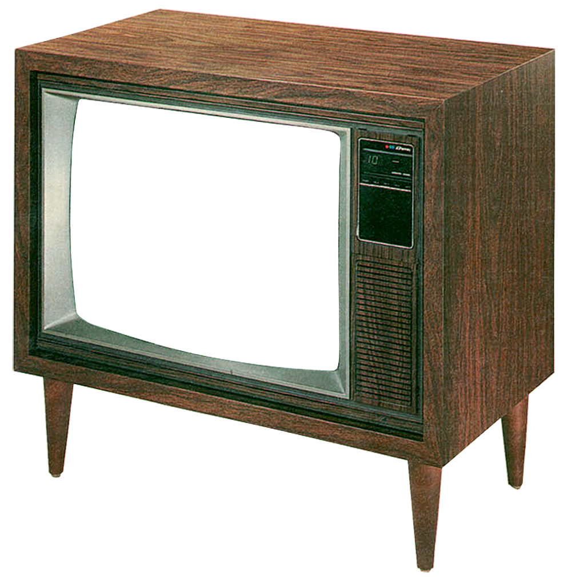

프로젝트 이미지 리스트

- 1
Hi,
I'm ㅇㅇㅇ
Web Publisher
안녕하세요! 제 이름은 강서영이고 웹 퍼블리싱을 즐깁니다. 웹 개발에 대한 관심은 2020년에 개인 판매업자로 인터넷 판매를 결정했을 때 시작되었습니다.
제품 상세페이지를 만들면서 HTML과 CSS에 대해 호기심이 생겼습니다. 현재로 돌아가서 저는 웹에이전시에서 1년간 일하면서 쇼핑몰, 관리자, 구인구직,
랜딩 사이트 등을 작업하여, Html, css, js, react, git 실력을 키우는 특권을 누렸습니다.
요즘 저는 새롭게 추가되는 css를 익히거나 codepen을 보는 것을 좋아하며, react로 쇼핑몰 사이트를 작업하는 과정을 배우고있습니다. 다음은 제가 작업한
몇가지 프로젝트들 입니다.
요즘 저의 주요 초점은 Upstatement에서 다양한 고객을 위해 접근 가능하고 포괄적인 제품과 디지털 경험을 구축하는 것입니다. 또한 최근에 Node & React를
사용하여 Spotify API로 웹 앱을 구축하는 데 필요한 모든 것을 다루는 과정을 시작했습니다. 다음은 제가 최근 작업 중인 몇 가지 기술입니다.
웹에이전시에서 1년간 일하면서 많은 기회를 얻었고, 이를 통해 많은 프로젝트와 다양한 경험을 쌓을 수 있었습니다. 다양한 사람들을 만나고
협업을 통해 많은 것을 배웠습니다.
쇼핑몰, 관리자, 구인구직, 채팅, 랜딩, 반응형 사이트 등 다양한 홈페이지를 작업한 경험이 있으며,
Html, css, js, react, git, sourcetree 등 사용하는 법을 익혔습니다.
I have
React 도 배우고 three js에 관심이있고, 항상 google에서 올라오는 신기술을 주의깊게 보고 응용하고있습니다.
I enjoy
각종 라이브러리 사용 및 응용 하다보면 Swiper, Slick, FullCalendar.js, gantt-task-react, rc-slider, FullPage, chart.js, range.slider.js bootstrap
I can use